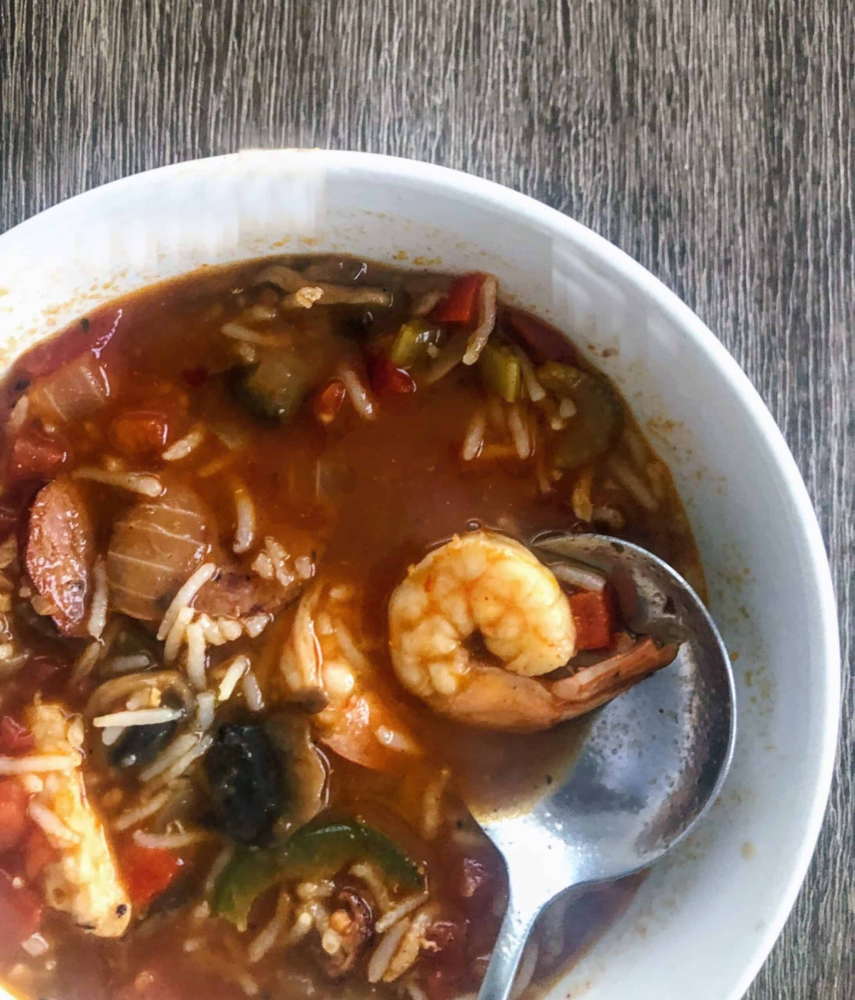

New Orleans Gumbo

Gumbo is a popular stew in Louisanana and is the offical state cruisine.
The soup is made of meat,shellfish,celery,onions,okra,and bell peppers.
Ingredients
- 1 cup of all purpose flour
- 2 small young chickens
- 1 cup yellow onion
- 1 small onion for chicken broth
- 1 green bell pepper
- 1 cup celery chopped
- 3 cloves garlic
- 6 cups chicken broth
- 4 bay leaves
- 1 tablespoon Cajun seasoning
- Kosher salt to taste
- Black pepper to taste
- 6 ounces fresh okra
- 3/4 cup vegetable oil
- 2 pounds andouille sausage sliced
- 1 1/2 raw shrimp peeled and deveined
- 8 scallions sliced
- 1 tsp thyme
- 1 tsp cayenne pepper
- 1/2 tsp garlic powder
- 2 tsp gumbo filet
- 1 tsp paprika
- 1 ounce dried shrimp
Instructions
- Preheat the Dutch oven or a heavy pot and add 3/4 cup
of oil then add 1 cup of flour gradually and stir continuously
(with a wooden spoon you must continue to stir from start to finish)
the heat should be on med-low and add in flour until the rue is a
dark chocolate color and a thick consistently.
- Add pre-cut bell peppers, onions and celery to the rue and stir until
the onions are translucent. Gradually Add 6 cups of your chicken
broth to the mix.
- Add the seasonings
- auté sausages, chicken and okra and dried shrimp
- Add everything to the pot and give it a good stir.
- Let the pot come to a slow rumble and cover for about 30 minutes
- After 30 minutes add the shrimp
- Add 1 tsp gumbo filet to pot.
- Turn on low and simmer for at least one hour.